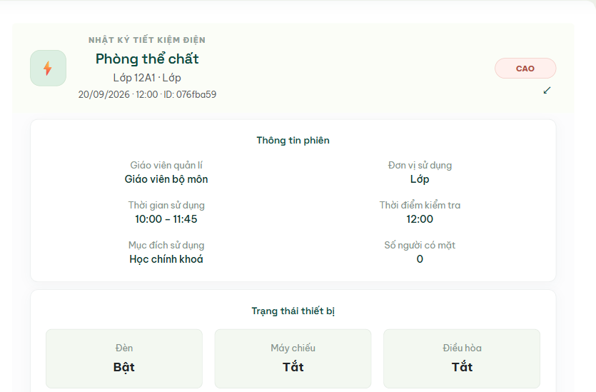
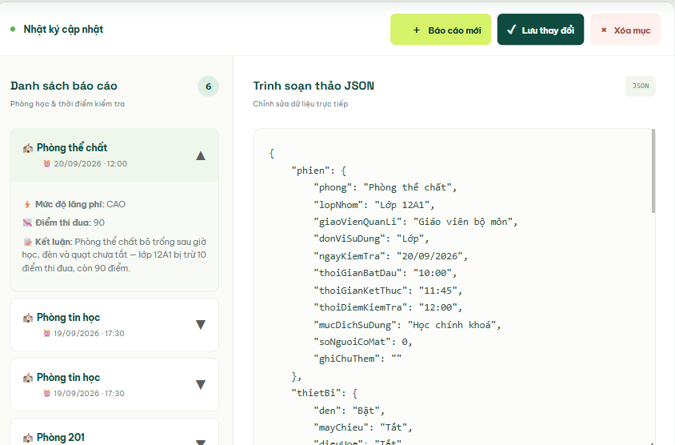

01
Lãng phí điện năng ngầm
Đèn, quạt hay điều hòa vẫn bật ngay cả khi giờ ra chơi hoặc phòng không có người – tạo nên khoản chi phí lãng phí không nhỏ mỗi ngày.
Khám phá giải pháp ↗Những thay đổi nhỏ trong lớp học có thể tạo ra tác động lớn khi cả tập thể cùng tham gia.
Đèn, quạt hay điều hòa vẫn bật ngay cả khi giờ ra chơi hoặc phòng không có người – tạo nên khoản chi phí lãng phí không nhỏ mỗi ngày.
Khám phá giải pháp ↗Ghi nhận bằng tay làm nhà trường khó theo dõi xu hướng, khó so sánh thi đua giữa các lớp và khen thưởng đúng thời điểm.
Trải nghiệm ngay ↗Khi mọi hành động tích cực được ghi nhận và tính vào điểm thi đua, việc tiết kiệm điện sẽ trở thành mục tiêu chung đầy hứng khởi của học sinh.
Bắt đầu ngay ↗Quy trình đơn giản, nhất quán giúp nhà trường, giáo viên, học sinh dễ dàng theo dõi, đóng góp
Kiểm tra thiết bị và thói quen sử dụng điện tại từng phòng học.
Thông tin được cập nhật thành báo cáo rõ ràng, dễ theo dõi.
Cùng nhìn lại kết quả, thi đua công bằng và duy trì thói quen tốt.
Một checklist đơn giản trước khi rời phòng có thể giúp cả lớp hình thành thói quen tốt mỗi ngày.
Kiểm tra công tắc trước mỗi lần ra khỏi lớp.
Đặc biệt trong giờ không ở trên lớp.
Ghi nhận thiết bị hỏng hoặc tiêu thụ điện bất hợp lý.
Lan tỏa hành động xanh, không đùn đẩy trách nhiệm.
Đèn · Quạt · Điều hòa
Một lần kiểm tra. Một thói quen tốt.
Khám phá nhanh không gian dành cho học sinh và giáo viên trước khi mở trang đầy đủ.
Giao diện trực quan, dễ dàng xem thi đua, báo cáo chi tiết
Khám phá góc học sinh ↗
Cập nhật báo cáo, dùng trợ lý AI và theo dõi dữ liệu năng lượng trong một không gian tập trung.
Mở cổng giáo viên ↗
Đi đến đúng không gian để bắt đầu hành động xanh hoặc theo dõi dữ liệu của nhà trường.